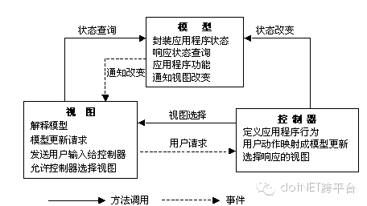

在本篇中不再详细介绍MVC的基础概念，这些东西百度要比我写的全面多了，MVC从1.0到5.0的时间也不短了，很多人只是按照范例去使用MVC的一些基础功能，并没有更加深入的了解MVC。在这一系列中，我主要介绍MVC的一些原理和使用技巧，以及MVC的发展方向。
先说说MVC，首先他是一种设计模式，如果你百度为什么GOF23种设计模式中没有MVC，答案很有意思,如下：
“在他们看来，它其实是其它三个经典的设计模式的演变：观察者模式(Observer)(Pub/Sub), 策略模式(Strategy)和组合模式(Composite)。根据MVC在框架中的实现不同可能还会用到工厂模式(Factory)和装饰器(Decorator)模式。”
.NET MVC 是一种使用 MVC（Model View Controller 模型-视图-控制器）设计创建 Web 应用程序的模式。
Model（模型）是应用程序中用于处理应用程序数据逻辑的部分。通常模型对象负责在数据库中存取数据。
View（视图）是应用程序中处理数据显示的部分。
Controller（控制器）是应用程序中处理用户交互的部分。

（1）MVC 1.0
发布时间：（2009年3月13日） 2007年.NET 1.0开始研发，2009年3月13日.NET MVC 1.0正式发布
简介：随着.NET WebFrom的使用人数较多，1.0版本发布后很大一部分开发者仍然使用WebFrom这种拖控件的方式开发Web应用程序，MVC 1.0使用人数并不是很多，只能算是一个婴儿。
（2）MVC 2.0
发布时间：（2010年3月）
简介：核心框架还是延续了1.0，但在Visual Studio工具上进行了改善、使用Html.RenderAction支持渲染网页或网站的某一部分等。这段时间很多开发者都在使用三层架构开发了对MVC的表现、逻辑分离的思想也进一步认识，很多开发者已经慢慢从WebForm向MVC转化。
（3）MVC 3.0
发布时间：(2011年1月)
简介：最大的变化就是，支持Razor视图引擎、有丰富的JS支持（比如Jquery）等，灵活性更高了，大量开发者基本抛弃了WebForm转向MVC。
（4）MVC 4.0
发布时间：（2012年）（随VS 2012一起发布）
简介：MVC 4.0经过几个版本变迁，已经变得非常成熟。增加了手机、Web Api等模板，增加脚本压缩合并，支持HTML5，增加JS库,对EF的支持等。几乎基于.NET Web项目都进入MVC时代。并进入完全开源时代（MVC之前开放源码，但不支持修改和贡献，4.0是真正意义上的开源）
（5）MVC 5.0
发布日期：（2013年）
简介：相对于MVC 4.0 MVC进一步优化，WebApi 2.0、增强路由（Attribute Routing）、进一步增强对JS库的支持，包括新增流行的bootstrap等，.NET Web项目上MVC使用者持续增长。
（6）MVC 6.0
发布日期：（2016年?月）（正式版发布日期待定）
简介：
a.跨平台部署开发：这将是一个跨时代的作品，包括.NET 5.0将命名为 Core 1.0，微软为了彻底解耦，拆分了所有功能，把.NET Framework几乎重写了一遍， 兼容老版本同时，支持跨平台部署。
在设计中很多地方借鉴了nodejs。而且将.NET 下所有项目开源，（开源地址：https://github.com/aspnet/）。并提供了跨平台开发工具Visual Studio Code,可运行于 Mac OS X、Windows和 Linux 之上。
b.框架整合：MVC 6整合了MVC、WebAPI、WebPage，彻底移除了WebForm。在View上提供Tag Helpers和View Components，真正意义上的前端DOM和JS分离，终于可以看到正常的HTML页面了。
c.进一步增强前端：内置了Nodejs、NPM、Grunt、Bower技术，支持AngularJS。
d.支持依赖注入技术，提供原生的DI框架，同时支持第三方容器。
e.支持xUnit.net，抛弃Visual Studio Unit Testing框架。
f.IDE依然强大：除了延续VS2013的强大功能之外，还支持Nodejs、Python开发，支持Android和iOS开发等。
优点：
a.分层设计,职责分离，易维护
b.强大的路由，URL路由模块是负责映射从浏览器请求到特定的控制器动作，提供了丰富重写。
c.出色的单元测试支持。
d.团队开发中的优秀表现。
e.开源（我想这个绝对是优点）
缺点：
a.框架的普遍缺点，开发过程中需要遵循模型、视图、控制器分离等规则，增加了结构复杂性。同时结构的复杂性，降低了运行效率。
b.视图模型频繁访问，一定程度上也损害了操作性能。
随着MVC的版本更迭，其性能也一直在提升，特别是进入完全开源之后，相信发展会越来越好，毕竟有全世界的大牛添砖加瓦。
本文地址：http://www.cnblogs.com/yubinfeng/p/5218172.html
.NET社区新闻，深度好文，微信中搜索dotNET跨平台或扫描二维码关注公众号
![]()